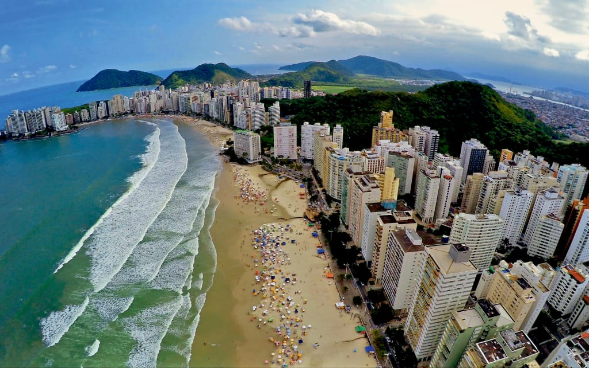
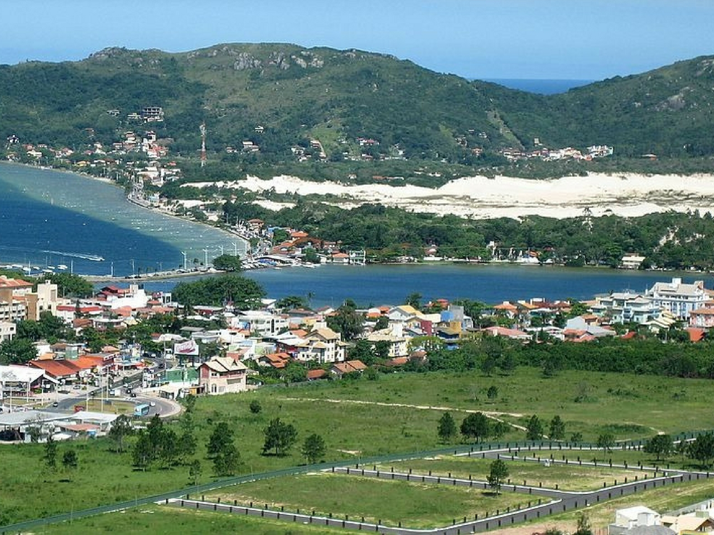
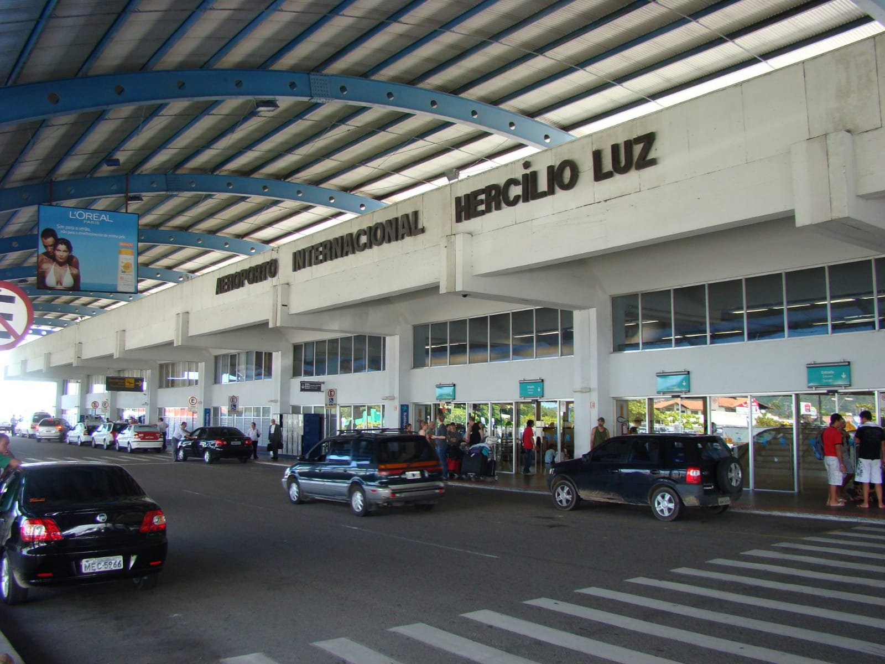
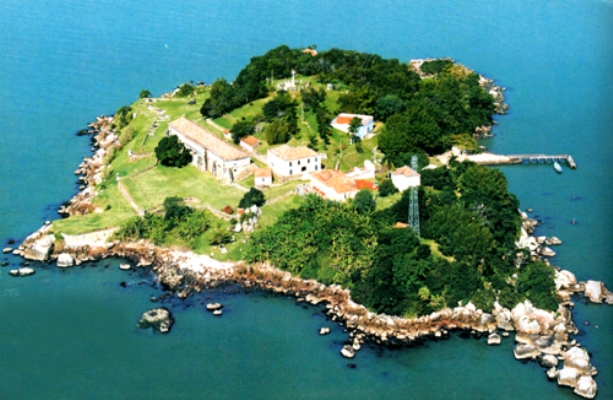
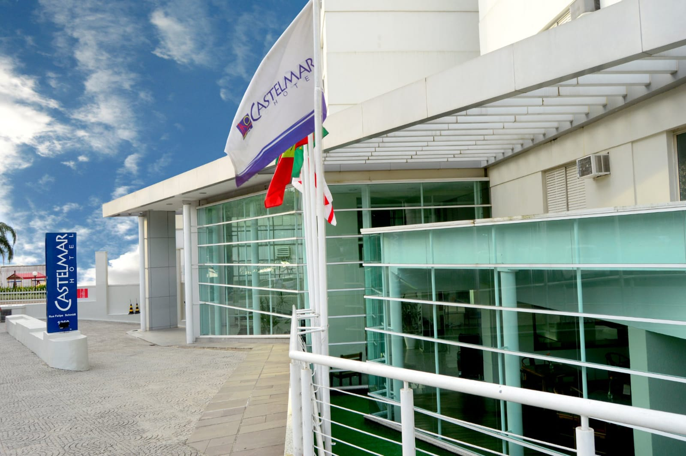
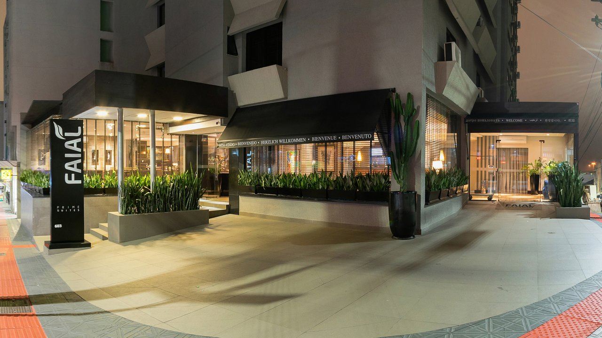
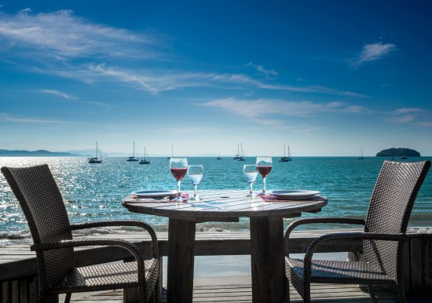
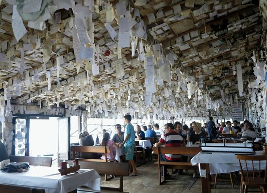
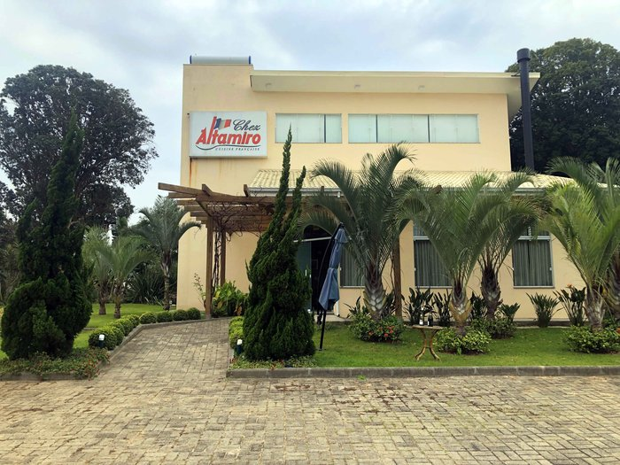
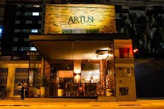

Florianopolis

Florianópolis es capital del estado de Santa Catarina, al sur de Brasil. Es una isla rodeada por el Océano Atlántico. Dentro de ella hay dos lagunas de grandes dimensiones, la Laguna da Conceição, de agua salada, y la Lagoa do Peri, de agua dulce. Además posee más de 100 playas, muchas de ellas en estado virgen.
Es un punto de llegada de turistas de todas partes del mundo debido a la cantidad de playas que tiene y es propicia para practicar surf o deportes náuticos. Es uno de los sitios turísticos muy visitados en Brasil.
Florianópolis tienes las mejores playas de Brasil. Por ello, es una de las ciudades mas visitadas del país. Además se caracteriza por ofrecer una experiencia distinta al viaje en la ciudad, pues Florianópolis se caracteriza por la calidad de vida de las personas, los espacios como hoteles acondicionados a los turistas y la amabilidad del trato de su gente.

Transporte en Florianópolis

Aeropuertos
A Florianópilis tiene conexión por vía aérea a través del Aeropuerto Hercilio Luz Internacional. Además puedes dirigirte a la ciudad desde el aeropuerto mediante bus o taxi.
Autobús en Florianópolis
Florianópolis cuenta con una red de transporte de autobuses que conecta las zonas de la ciudad. Cuenta con 9 estaciones que conectan los vehículos de las empresas principales. Además cuenta con la terminal Terminal Rita María que conectan la ciudad con varias regiones de Brasil.
Si quieres llegar con mayor rapidez a la playa usa las Linhas Executivas. Se caracterizan por el color amarillo y tienen una ruta directa desde el centro hasta las principales playas.
Sitios turísticos en Florianópolis

Florianópolis posee un abanico de posibilidades cuando de atracciones se trata. Un paseo a los fuertes permite efectuar un recorrido por la historia de la ciudad y un recorrido por la Costa da Lagoa permite apreciar en toda su magnitud la belleza de sus innumerables playas y hasta participar del avistaje de algunos delfines o ballenas. En Ilha do Campeche se pueden visitar algunos sitios arqueológicos donde se observan aún hoy algunas inscripciones rupestres.
Fortalezas
Fortaleza de Santa Cruz de Anhatomirim.
Debido a la estratégica ubicación de la isla en Santa Catarina, los portugueses idearon un sistema de defensa durante el siglo XVIII en su afán de evitar que el territorio fuera tomado por los españoles. Para ello construyeron una serie de fortalezas y fuertes que constituyen hoy un verdadero patrimonio histórico. Sin embargo, en el año 1777, los españoles invadieron la isla y nada pudo evitarlo. La mayoría de las edificaciones han sido restauradas y se realizan paseos en barco para visitarlas. Algunos de los fuertes más visitados son: el de Santa Cruz de Anhatomirim y Santo Antônio de Ratones, erigidos en islotas. Por tierra se pueden visitar las fortalezas de São José da Ponta Grossa, Santana y Marechal Moura de Naufragados.
Mercado Público
Es todo un símbolo en la isla y se trata de una construcción del año 1898 en la cual existen actualmente más de 100 puestos comerciales donde se pueden comprar prendas de vestir, alimentos, calzados, artesanías etc. y donde además hay varios bares y espectáculos en vivo. El lugar permanece cerrado los días domingo.
Lagoa da Conceição
Es una bellísima laguna rodeada de dunas de arenas blancas y donde se pueden practicar gran variedad de deportes náuticos como windsurf, kayak, vela y jet-ski. El lugar ofrece a los visitantes, varias tiendas locales que ofrecen encajes y artesanías locales; además varios restaurantes, discotecas, bares y cafeterías, que conviefrten la noche de Lagoa en una de las más agitadas de la ciudad. Desde el Morro Costa da Lagoa, se logra una de las mejores vistas panorámicas de Lagoa de Conceicao. Para efectuar recorridos más osados, es aconsejable arrendar un vehículo todo terreno y llegarse hasta playas perdidas e inexploradas.
Laguna de Ibiraquera
Playa JoaquinaUn sitio ideal para los amantes del windsurf. Está a pocos kms. y se trata de una playa de arenas blancas que ofrece cabañas y posadas muy confortables en medio de lo que es un histórico poblado de pescadores.
Playas en Florianópolis
En materia de playas, Florianópolis tiene una para cada gusto. Las más concurridas y con mejor infraestructura son Canasvieiras, Cachoeira do Bom Jesus, Jurerê e Ingleses. Para quienes busquen relajarse sin mucho ruido, las playas más tranquilas son Moçambique y Campeche. Naufragados y Lagoinha do Leste son playas agrestes y con exhuberante vegetación virgen. Para los surfistas las mejores playas son Joaquina, Mole, do Matadeiro y Brava, donde se encuentran las mejores olas. Cachoeira do Bom Jesus y Ponta das Canas tienen aguas muy tranquilas y son especiales para deportes. náuticos. La isla cuenta con un total de 42 playas, todas ellas a pocos kms. de la ciudad de Florianópolis.
Museos Museo Histórico Santa CatarinaLa casa de campo colonial fue construida, por el gobernador de brigada José Da Silva Paes con el fin de convertirlo en el Palacio del gobierno estatal.
El palacio fue escenario de muchas ceremonias y los acontecimientos políticos y militares, incluidas las visitas de los emperadores Pedro I y II. Es uno de los museos más visitados de Florianópolis.
Hoteles en Florianópolis
En esta hoja te brindamos algunas sugerencias de Hoteles en Florianópolis, Brasil, para que disfrutes plenamente de tu estadía.
Castelmar Hotel

Bienvenido a Castelmar Hotel, una fantástica opción para viajeros como tú.
Como está muy cerca de conocidos puntos de referencia, como Praça Hercílio Luz (0,3 km) y Igreja São Francisco (1,0 km), los huéspedes de Castelmar Hotel pueden acceder con facilidad a algunas de las atracciones más conocidas de Florianópolis.
Castelmar Hotel ofrece una gran variedad de servicios en la habitación, como televisor de pantalla plana, minibar y aire acondicionado, y puedes permanecer conectado, ya que hay wifi gratuito disponible.
El hotel ofrece recepción abierta 24 horas, servicio de habitaciones y espacio para guardar el equipaje, para que tu estancia sea incluso más agradable. El establecimiento también cuenta con piscina y bar. Los huéspedes que lleguen en coche tienen acceso a aparcamiento privado de pago allí mismo.
En Florianópolis hay un gran número de restaurantes de comida francesa. Así que cuando estés aquí, no te pierdas sitios como Liquorice Gastro Pub, Bistro da Praca y Brewmille, que sirven fantásticos platos.
Si tienes tiempo, Mercado Municipal, Ciclovia Beira Mar Norte y Hercilio Luz Bridge son atracciones conocidas a las que puedes llegar andando.
Castelmar Hotel está deseando darte la bienvenida cuando visites Florianópolis.
Pagina Web:
Hotel Castel Mar
Faial Prime Suites

Faial Prime Suites es una magnífica elección para los viajeros que visiten Florianópolis, ya que ofrece un ambiente para familias, además de numerosos servicios diseñados para mejorar tu estancia.
Al contar con muchos conocidos puntos de referencia en las inmediaciones, como Igreja São Francisco (0,4 km) y Praça Hercílio Luz (0,5 km), los huéspedes de Faial Prime Suites tienen la oportunidad de visitar con facilidad algunas de las atracciones más populares de Florianópolis.
Las habitaciones incluyen televisor de pantalla plana, minibar y aire acondicionado, y es posible permanecer conectado, ya que hay wifi gratuito disponible, para que disfrutes de tu descanso con comodidad.
Faial Prime Suites ofrece recepción abierta 24 horas, servicio de habitaciones y conserje. Además, como huésped de Faial Prime Suites, puedes disfrutar de desayuno incluido disponible allí mismo. Los huéspedes que lleguen en coche tienen acceso a aparcamiento.
Mientras estés en Florianópolis, quizás quieras probar algunos de los restaurantes que hay cerca de Faial Prime Suites, como Box 32 (0,4 km), Rita Maria Lagosteria (0,6 km) y Taberna Iberica (0,7 km).
Si te interesa explorar Florianópolis, visita una ruina antiguas como Praça Roldão da Rocha Pires.
Pagina Web:
Faial Prime
Restaurantes

Bar do Arante

Es un restaurant tradicional del sur de la isla de Florianopolis, con vista al mar, al morro y en medio de un pueblo de pescadores (Pantano do Sul). Es realmente pintoresco y la comida y el servicio son muy buenos. Una experiencia en sí mismo.
Pagina Web:
Bar do Arante
Chef Altamiro Nunes

Ofrezca la experiencia gastronómica francesa completa de Chez Altamiro.
Cómo llegar al restaurante
Florianópolis, 88060-000, Florianópolis, Brasil
Indicaciones para llegar al lugar
Rod. João Gualberto Soares, 6065 - Ingleses do Rio Vermelho
Artusi Restaurant

Artusi Ristorante, ubicado en Rua Bocaiúva, una de las mejores direcciones en el centro de Florianópolis, combina lo mejor de la cocina italiana con el reconocido toque de la Chef Alysson Müller.
Alysson es un entusiasta que está satisfecho no solo con la preparación y creación de los platos, sino también con la investigación de viajes que realiza principalmente en el interior de Italia en busca de lo más genuino en esa cocina.
En Artusi, se dio cuenta del deseo de tener un restaurante verdaderamente italiano, con la alta calidad que lo hizo conocido en Santa Catarina.
Alysson también dirige Rosso, en Santo Antônio de Lisboa, reconocido como el mejor restaurante para preparar pulpo en Santa Catarina, y como uno de los mejores restaurantes de mariscos de la región.
Pagina Web: Artusi Restaurant